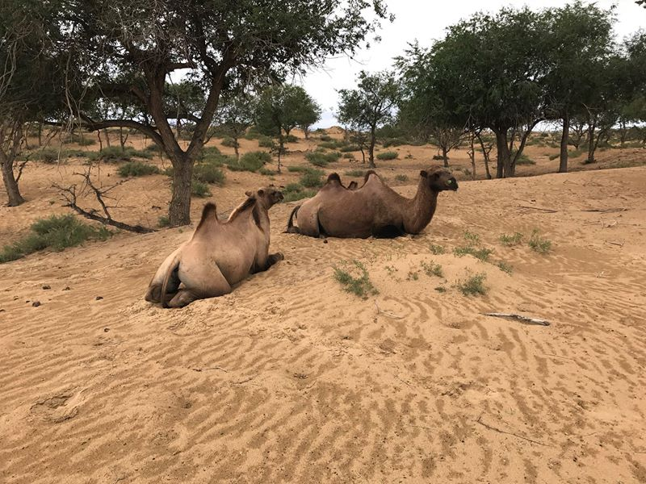

Mongolsko - venkov
Pár fotek z centrálního Mongolska.
Po 14 hodinách cesty autobusem jsem dorazil do Moronu, které je vzdálené asi 600 km od UB. Samotné cestování autobusem je v Mongolsku docela zážitek. Každé dvě hodiny autobus zastavuje na očerstvení a čůrací pauzy (často uprostřed pole, kde není za co se skrýt. Já si vybral noční autobus s úmyslem cestu prospat, což se stejně nepodařilo, protože mě budilo permamentní troubení na okolní krávy a další dobytek, který odpočíval na silnici.
Hned po příjezdu mě tam popadla nějaká žena a odvezla mě někam za město do dobrovolnického kempu. Byl jsem jediný neasiat z autobusu, takže asi usoudila, že jsem dobrovolník, ale patrně si mě s někým spletla. Je možné, že ještě teď nějaký jiný evropský dobrovolník čeká v Moronu, až ho někdo vyzvedne (sorry!. Nicméně bylo to fajn a mongolské děti jsme alespoň naučili názvy oceánů a kontinentů.
Socha v Moronu.

V Moronu jsem měl taky první konflikt s opilým Mongolem. To je velký problém Mongolska - alkohol. Alkohol tady mají rádi, dávají si ho i na klíče. Bohužel neumí pít a jakmile jsou opilí, jsou hodně agresivní. Přes den uvidíte v UB spoustu opilých lidí, kteří leží na ulici, na cestě a nevíte, zda jsou mrtví, nebo jen opilí (Masha říká, že něco mezi.
Existuje více verzí, co se toho večera stalo. Ta, která se mi líbí nejvíce je, že jsem šel po ulici, viděl opilého Mongola, jak řve na nějaké holky a pocítil jsem svou povinnost dívkám pomoci, takže jsem k nim přišel, trochu se s Mongolem požduchal a pak jsme oba šli svojí cestou.
Nerad to říkám, Mongolsko je krásná země, ale pokud by sem chtěla nějaká cestovatelka vydat úplně sama, tak to velmi silně nedoporučuji.
První ježdění na koni. Je to jako karaoke. Jak to jednou zkusíš, už nejde přestat!
Původně jsem měl strávit několik dní na koních tady na severu se svým šerpou Tenzingem, ale osud tomu chtěl a přejezd nakonec padl …
Místo toho jsem našel náhodou v jedné diskusi příspěvek Pieriho. To je mladý Inuita (Eskymák, který se do Mongolska dostal v 18 v rámci organizované tour a v Gobi se mu tak zalíbilo, že už tady u jedné rodiny zůstal. Takže jsem mu napsal a domluvil se s ním, že přijedu.
Víte, proč má smysl cestovat? Abyste zažili něco, co vás trvale změní. Třeba z 10% upraví pohled na nějakou věc. Každý den se mě večer Masha ptá, jaký byl můj den, a ráno, jak jsem se vyspal. Je to pidi drobnost, kterou jsem se od ní naučil, ale jsem za to rád.
Když jsem tady přijel k jurtám za Peirim, přiběhl za mnou tenhle prcek, chytl mě za ruku a dotáhl mě ke koním. Sám se k ním bál, ale se mnou získal jistotu, i když mě vůbec neznal. Kůň klidně stál a nechal se od něj hladit.
Takže když jsem byl včera s jednou holkou se sympatickým jménem Urnaa v restauraci a ptala se mě, co mě nejvíce na Mongolsku zaujalo, tak jsem hned odpověděl, že děti. Chovají se jinak, než ty evropské. Zatímco ty evropské mají vojenský režim a musí chodit třeba spát v danou hodinu, tady se nic neřeší. Chodí spát, kdy chtějí, vstávají, kdy chtějí, vezmou si jídlo, kdy chtějí. Za celou dobu, co jsem v Mongolsku, jsem nezažil, že by nějaká matka třeba seřvala dítě.
Tady mě zrovna Amra, kterému je něco přes 4 roky, učil skládat rubikovu kostku. Mimochodem, pokud chcete někdy u podobné mongolské rodiny žít a chcete jim něco přivézt, přivezte různé hlavolamy.
Chvíli poté, co jsem do jurty přijel, mě vzal Pieri na koně. Fotka je ještě z doby, kdy se kůň pohyboval krokem, který se po chvíli změnil v regulérní sprint.
Buddhistické kláštery někde uprostřed hor. Třetinu zničili Rusové, třetinu Číňani. Dalšího velkého spojence už Česko nemá, takže se naštěstí podařilo něco zachovat.
Lebky a další kosti najdete všude.
Typická mongolská jurta a v ní pán, kterému je 80 let.
Postel z trilogie Slunce, seno …
Mongolové žijí hodně osamoceně. Vždy je jedno místo, kde jsou 3 - 4 jurty. Jakmile se jeden z bratrů ožení, postaví si nové jurty o kilometr dál.
Dvě osmnáctiletá dvojčata.
Jurta, ve které jsem po několik dní bydlel.
Matka s čerstvě narozeným dítětem.
Jurta a jediné okno v ní. Vypadá to hezky, dokud nezačalo jednou v noci pršet.
Krajinky. Step, pak pás zelené trávy, pak pás dun a pak hory. V dálce je vidět jezero, odkud se bere pitná voda a kde se taky jednou za měsíc chodí lidi koupat.
Protože tady mají i velbloudy, bylo mi nabídnuto, abych si na nich zajezdil. Tenhle byl můj, jen se strašně předváděl a když jsem si ho fotil, začal dělat pózy. Héréčka.
Večerní procházka s velbloudem, kdy se snažíme zahnat dobytek zpět do ohrady.
Někde nevím kde.
Jeden den jsem si sbalil pár věcí a šel na procházku po okolí, protože jsem potřeboval najít mobilní internet. Ten jsem sice nenašel, místo toho jsem narazil na stádo velbloudů.

Pieriho adoptní rodina, u které jsem bydlel. Ženu v bílem oslovuje jako matku (je jí 48 let, po levé ruce je jeho adoptivní otec, žena v černém tričku je prý velice slavná mongolská herečka (zase tak slavná ne, když ji neznám.
Cesta zpět do Ulánbátaru. Rozhodl jsem se poprvé stopovat a stopl jsem auto plné Mongolek, které mě byly ochotné svézt. Dvě na mě hned po výjezdu usnuly, což považuji za obdivuhodné, protože jsem nemohl mít několik dní sprchu. Bylo to ale fajn :-